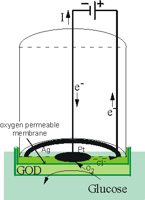
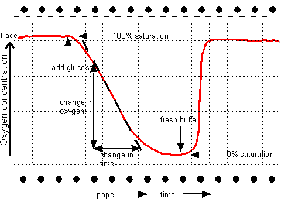
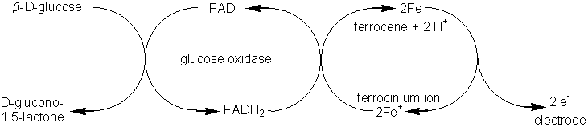
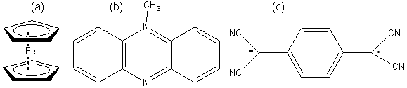
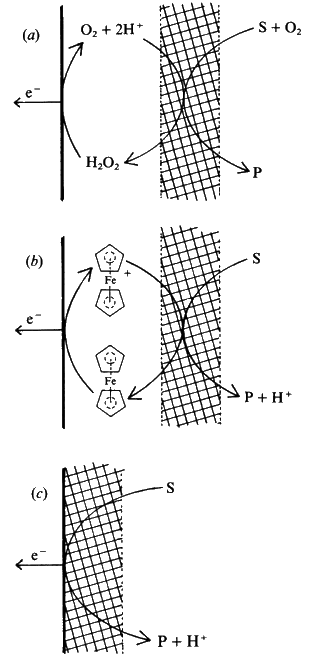

|
|
Amperometric biosensorsAmperometric biosensors function by the production of a current when a potential is applied between two electrodes. They generally have response times, dynamic ranges and sensitivities similar to the potentiometric biosensors. The simplest amperometric biosensors in common usage involve the Clark oxygen electrode (Figure 6.5). This consists of a platinum cathode at which oxygen is reduced and a silver/silver chloride reference electrode. When a potential of -0.6 V, relative to the Ag/AgCl electrode is applied to the platinum cathode, a current proportional to the oxygen concentration is produced. Normally both electrodes are bathed in a solution of saturated potassium chloride and separated from the bulk solution by an oxygen-permeable plastic membrane (e.g., Teflon, polytetrafluoroethylene). The following reactions occur:
Ag anode 4Ag0 + 4Cl− Pt cathode O2 + 4H+ +
4e− The efficient reduction of oxygen at the surface of the cathode causes the oxygen concentration there to be effectively zero. The rate of this electrochemical reduction therefore depends on the rate of diffusion of the oxygen from the bulk solution, which is dependent on the concentration gradient and hence the bulk oxygen concentration (see, for example, equation 3.13). It is clear that a small, but significant, proportion of the oxygen present in the bulk is consumed by this process; the oxygen electrode measuring the rate of a process which is far from equilibrium, whereas ion-selective electrodes are used close to equilibrium conditions. This causes the oxygen electrode to be much more sensitive to changes in the temperature than potentiometric sensors. A typical application for this simple type of biosensor is the determination of glucose concentrations by the use of an immobilised glucose oxidase membrane. The reaction (see reaction scheme [1.1]) results in a reduction of the oxygen concentration as it diffuses through the biocatalytic membrane to the cathode, this being detected by a reduction in the current between the electrodes (Figure 6.6). Other oxidases may be used in a similar manner for the analysis of their substrates (e.g., alcohol oxidase, D- and L-amino acid oxidases, cholesterol oxidase, galactose oxidase, and urate oxidase)  Figure 6.5. Schematic diagram of a simple amperometric biosensor. A potential is applied between the central platinum cathode and the annular silver anode. This generates a current (I) which is carried between the electrodes by means of a saturated solution of KCl. This electrode compartment is separated from the biocatalyst (here shown glucose oxidase, GOD) by a thin plastic membrane, permeable only to oxygen. The analyte solution is separated from the biocatalyst by another membrane, permeable to the substrate(s) and product(s). This biosensor is normally about 1 cm in diameter but has been scaled down to 0.25 mm diameter using a Pt wire cathode within a silver plated steel needle anode and utilising dip-coated membranes.  Figure 6.6. The response of an amperometric biosensor utilising glucose oxidase to the presence of glucose solutions. Between analyses the biosensor is placed in oxygenated buffer devoid of glucose. The steady rates of oxygen depletion may be used to generate standard response curves and determine unknown samples. The time required for an assay can be considerably reduced if only the initial transient (curved) part of the response need be used, via a suitable model and software. The wash-out time, which roughly equals the time the electrode spends in the sample solution, is also reduced significantly by this process. An alternative method for determining the rate of this reaction is to measure the production of hydrogen peroxide directly by applying a potential of +0.68 V to the platinum electrode, relative to the Ag/AgCl electrode, and causing the reactions: Pt anode H2O2
Ag cathode 2AgCl + 2e−
The major problem with these biosensors is their dependence on the dissolved oxygen concentration. This may be overcome by the use of 'mediators' which transfer the electrons directly to the electrode bypassing the reduction of the oxygen co-substrate. In order to be generally applicable these mediators must possess a number of useful properties.
The ferrocenes represent a commonly used family of mediators (Figure 6.7a). Their reactions may be represented as follows,  [6.17] Electrodes have now been developed which can remove the electrons directly from the reduced enzymes, without the necessity for such mediators. They utilise a coating of electrically conducting organic salts, such as N-methylphenazinium cation (NMP+, Figure 6.7b) with tetracyanoquinodimethane radical anion (TCNQ.- Figure 6.7c). Many flavo-enzymes are strongly adsorbed by such organic conductors due to the formation of salt links, utilising the alternate positive and negative charges, within their hydrophobic environment. Such enzyme electrodes can be prepared by simply dipping the electrode into a solution of the enzyme and they may remain stable for several months. These electrodes can also be used for reactions involving NAD(P)+-dependent dehydrogenases as they also allow the electrochemical oxidation of the reduced forms of these coenzymes. The three types of amperometric biosensor utilising product, mediator or organic conductors represent the three generations in biosensor development (Figure 6.8). The reduction in oxidation potential, found when mediators are used, greatly reduces the problem of interference by extraneous material.  Figure 6.7. (a) Ferrocene (e5-bis-cyclopentadienyl iron), the parent compound of a number of mediators. (b) TMP+, the cationic part of conducting organic crystals. (c) TCNQ.-, the anionic part of conducting organic crystals. It is a resonance-stabilised radical formed by the one-electron oxidation of TCNQH2.  Figure 6.8. Amperometric biosensors for flavo-oxidase enzymes illustrating the three generations in the development of a biosensor. The biocatalyst is shown schematically by the cross-hatching. (a) First generation electrode utilising the H2O2 produced by the reaction. (E0 = +0.68 V). (b) Second generation electrode utilising a mediator (ferrocene) to transfer the electrons, produced by the reaction, to the electrode. (E0 = +0.19 V). (c) Third generation electrode directly utilising the electrons produced by the reaction. (E0 = +0.10 V). All electrode potentials (E0) are relative to the Cl−/AgCl,Ag0 electrode. The following reaction occurs at the enzyme in all three biosensors: Substrate(2H) + FAD-oxidase This is followed by the processes: (a) FADH2-oxidase + O2 electrode H2O2 (b) FADH2-oxidase + 2 Ferricinium+
electrode 2 Ferrocene (c) FADH2-oxidase The current (i) produced by such amperometric biosensors is related to the rate of reaction (vA) by the expression: i = nFAvA (6.6) where n represents the number of electrons transferred, A is the electrode area, and F is the Faraday. Usually the rate of reaction is made diffusionally controlled (see equation 3.27) by use of external membranes. Under these circumstances the electric current produced is proportional to the analyte concentration and independent both of the enzyme and electrochemical kinetics. This page was established in 2004 and last updated by Martin
Chaplin |